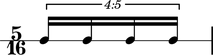

Written duration
Abjad uses written duration to refer to the face value of notes, rests, chords and skips without prolation. Abjad written duration corresponds to the informal names we use when talking about duration.
The sixteenth notes here are worth exactly a sixteenth of a whole note.
abjad> measure = Measure((5, 16), Note(0, (1, 16)) * 5) abjad> Beam(measure) abjad> staff = RhythmicStaff([measure]) abjad> note = measure[0] abjad> note.duration.written Rational(1, 16) abjad> show(staff)

The sixteenth notes here are worth more than a sixteenth of a whole note.
abjad> tuplet = FixedDurationTuplet((5, 16), Note(0, (1, 16)) * 4) abjad> Beam(tuplet) abjad> measure = Measure((5, 16), [tuplet]) abjad> staff = RhythmicStaff([measure]) abjad> note = tuplet[0] abjad> note.duration.written Rational(1, 16) abjad> show(staff)
The notes in these examples carry different durations. But we probably still call them all sixteenths anyway. Abjad written duration captures the fact that these notes write the same way before prolation.